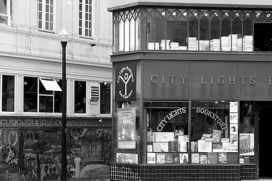
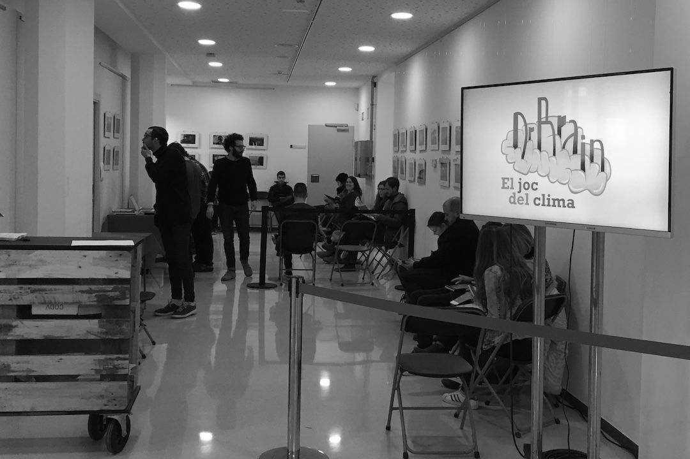

Research Interests
My research so far is focused on developing and applying computational algorithms to a large variety of topics. In particular, it has been concentrated on three main areas, the study of the decision-making process and human behaviour, the use of machine learning algorithms to study and unveil patterns in social phenomena, and the development of technological systems to perform participatory research and citizen science.
Currently, my multidisciplinary work bridge: complex social systems, human-computer interaction, machine learning and citizen science, and my research interests line in:
I. Urban Systems and Social Justice. Designing algorithms to model urban systems from a data-driven approach, tackling issues such as data and algorithmic bias. Studying phenomenon like gentrification and related effects, such as displacement of residents and housing market impact; segregation and integration of vulnerable collectives; gender-based inequalities in urban contexts such as mobility patterns and labour market, or public health and sustainability in relation to urban ecosystems, collective behaviour, environmental health, and socio-economic factors.
II. Human Behaviour and Social Interactions. Researching to better understand human behaviours facing collective-risks, the effects of the ubiquitous inequalities among individuals and the sustainability of cooperation to increase social welfare. Characterizing interactions in social networks and participatory platforms, analysing phenomenons such as spreading of misinformation and fake news or the influence in public opinion of autonomous agents and social media bots.
III. Citizen Participation in Science. Designing participatory projects and platforms to incentive the involvement of citizens in science and other participatory actions. Following the principles of open research culture: transparency, openness and reproducibility in order to help the community to evaluate, critique, reuse and extend this research by means of open platforms, open datasets, open codes, and open publications.
Transvesally, I’m interested in the analysis and visualization of data for evidence-based decision-making and the relationship among science, technology, education and the arts.

© Debaird | City Lights Bookstore, San Francisco
The book «The Science of Citizen Science» has been finally published with the contribution of over a hundred authors. Personally, I contributed to the chapter «Machine Learning in Citizen Science: Promises and Implications» in which we delve into the application of machine learning in citizen science and into the collaboration between citizens and machines to solve complex problems fairly. In addition to that, I participated in other projects presented in the chapters «Citizen Social Science: New and Established Approaches to Participation in Social Research» and «Participation and Co-creation in Citizen Science».
This book covers all aspects, including the strengths and barriers, that are relevant to fulfill the many expectations of citizen science. It is a wonderful conclusion to four years of intensive exchange and cooperation within a European research network on citizen science in the context of COST Action 15212: Citizen Science to promote creativity, scientific literacy, and innovation throughout Europe.
January 1st, 2020
Research Paper
© Martí E. Berenguer | FiraTàrrega
Cooperation in hyper-social spaces is highly conditioned by the gender of the interacting individuals. This experiment, carried out at Fira de Tàrrega in 2017, measures the willingness of people to cooperate, pairing them to take part in the prisoner's dilemma game, outdoors and in the context of an artistic performance. This experiment, performed using participatory research and citizen science principles, shed light on how the other’s gender identity is a relevant factor in terms of cooperation and trust. In hyper-social scenarios, individuals show a pro-social behaviour, especially women, who exhibit high levels of cooperation, trust and ability to guess the others’ behaviour. The complete research paper «Gender-based pairings influence cooperative expectations and behaviours» is publicly available in Scientific Reports and co-authored with Anna Cigarini and Josep Perelló.
November 15th, 2019
Thesis
PhD special prize

© Julián Vicens | Thesis report
«Doctoral Special Prize» awarded to my doctoral dissertation «Human Behaviour Experimentation and Participation in Scientific Activities in the Wild» by Universitat Rovira i Virgili. I would like to thank Jordi Duch and Mercè Gisbert for their supervision, the co-authors of the publications included in the thesis and the committee formed by Marisa Ponti, Frederic Guerrero and Sergio Gomez, who awarded it with the mention "Cum Laude". The work delves into the understanding of social complex systems and studies cooperation in different contexts by means of collective experimentation based on game theory and social dilemmas. The dissertation also digs into the development of platforms to perform participatory and citizen science and the application of machine learning algorithms to unveil behavioural patterns.
December 1st, 2018
Research Paper
© Julian Vicens | Climate Change Game
Citizen Social Lab is a digital platform used to perform behavioural experiments in the wild following the principles of citizen science. This platform collects data from the interaction between individuals who face a varied set of social dilemmas (public goods games, prisoner’s dilemma, trust game...). The platform is analysed with detail in the paper «Citizen Social Lab: A Digital Platform for Human Behaviour Experimentation Within a Citizen Science Framework» published in PlosOne with data of more than two thousand individuals participating in experiments in the public space. This paper is co-authored with Jordi Duch and Josep Perelló.
November 1st, 2018
Research Paper

© Spencer Tunick | Aletsch, Alps
Social experiment that studies the cooperation around the negotiations against climate change. It was carried out in Barcelona using citizen science methodologies with the participation of 324 individuals. The outlines of the experiment published in PlosOne revealed that inequalities around climate change negotiations are tougher on individuals, societies and organizations with few resources, who are, at the same time, the ones that show higher cooperation levels in relative terms.
September 27st, 2018
Conference

© Jan Collsiö | Dagen H
Talk at the Conference of Complex Systems (Thessaloniki, 2018) within the workshop «Complex systems for the most vulnerable». The talk,
«Addressing social justice and unveiling vulnerabilities through game theory and collective experiments», was focused on presenting the emergency of behaviours around important societal challenges such as climate change and its mitigation actions, public health and the current trend to reinforce care-at-home services, and the health impact on citizens due to strong inequalities in city air quality. All this phenomena was studied by means of a set of lab-in-the-field behavioural experiments coupled with citizen science practices.
© Unknow author | Starlings flow
Presentation of our work about social interactions in the mental health care community at the VII Jornada Complexitat: complex systems for theory to data science. The talk «A game theory approach to the mental health community» dig into the behavioural traits of role groups and the social capital in the mental health ecosystem.
March 1st, 2018
Thesis
PhD thesis defense
© Julián Vicens | Thesis report
Defense of my doctoral dissertation «Human Behaviour Experimentation and Participation in Scientific Activities in the Wild» in Spring 2018. The thesis was supervised by Jordi Duch and Mercè Gisbert. This work, developed during four years, delves into the understanding of social complex systems and studies cooperation in different contexts (climate change, mental health care community, etc.) by means of collective experimentation based on game theory and social dilemmas. The dissertation also digs into the development of platforms to perform participatory and citizen science and the application of machine learning algorithms to unveil behavioural patterns. It was successfully defended and awarded with the mention "Cum Laude" by the committee formed by Marisa Ponti, Frederic Guerrero and Sergio Gomez.
February 28th, 2018
Research Paper

© OpenSystems | Mental Health Day, Lleida
Mental disorders have an enormous impact in our society. In «Quantitative account of social interactions in a mental health care ecosystem: cooperation, trust and collective action» we present the results of a suite of games that allow us to probe into different behavioral traits of the mental health care community role groups by means of citizen science practices. The evidence reinforces the idea of community social capital, with caregivers and professionals playing a leading role. Yet, the cost of collective action is mainly supported by individuals with a mental condition - which unveils their vulnerability. We finally point to the conditions under which cooperation among members of the ecosystem is better sustained, suggesting how virtuous cycles of inclusion and participation can be promoted in a "care in the community" framework. This research paper was co-authored with Anna Cigarini, Josep Perelló and Anxo Sanchez.
September 1st, 2016
Research Paper
© OpenSystems | DAU Festival, Barcelona
Lab-in-the-field experiment in which 541 individuals face four different dyadic games with the aim of establishing general behavioral rules dictating individuals’ actions. By analyzing the observations of these simple social situations using machine learning algorithms, we find that a majority of the subjects conform, with a large degree of consistency, to a limited number of behavioral phenotypes: envious, optimist, pessimist, and trustful. The complete results are publised in Science Advances.